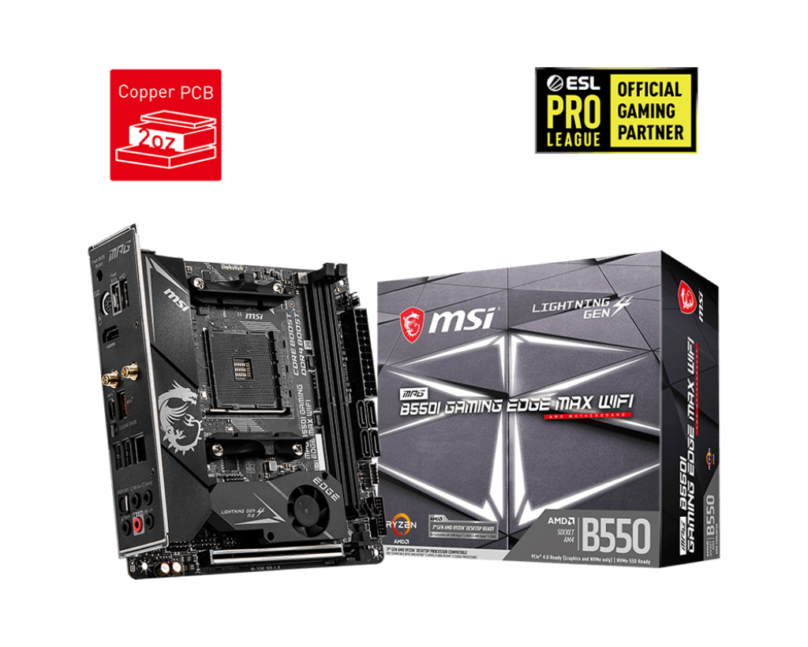

Join our Newsletter

Overview
- Supports AMD Ryzen™ 5000 & 3000 Series desktop processors (not compatible with AMD Ryzen™ 5 3400G & Ryzen™ 3 3200G) and AMD Ryzen™ 4000 G-Series desktop processors
- AMD Socket AM4
- AMD B550 Chipset
- Graphics interface: 1x PCI-E 4.0/3.0 x16 slots
- Display interface: HDMI 2.1 – Requires Processor Graphics
- Memory Support 2 DIMMs, Dual Channel DDR4-4600MHz(OC)
- Storage: 1x M.2 Gen4 x4 + 1x M.2 Gen3 x4 slot | 4x SATA 6Gb/s ports
- USB Ports: 2x USB 3.2 Gen2 10Gbps (1 Type-A + 1 Type-C) + 5x USB 3.2 Gen1 5Gbps (4 Type-A + 1 Type-C) + 4 x USB 2.0
- LAN: Realtek® RTL8125B 2.5Gbps LAN controller
- Wireless/Bluetooth: Intel®Wi-Fi 6 AX200, Bluetooth® 5.1
- Audio: 8-Channel (7.1) HD Audio with Audio Boos
- Extended heat sink design - MSI extended PWM heatsink and enhanced circuit design ensures even high-end processors to run in full speed.
- Digital Power Design - 8+2+1 aggressive VRM design with Dr.MOS 60A to maximize performance
- 2.5G LAN - Onboard 2.5G LAN with LAN manager, delivering the best online gaming experience.
- WIFI 6 - The latest wireless solution supports MU-MIMO and BSS color technology, delivering speeds up to 2400Mbps.
- Lightning Gen4 Solution - The latest Gen4 PCI-E and M.2 solution with up to 64GB/s bandwidth for maximum transfer speed.
- Flash BIOS Button - Simply use a USB key to flash any BIOS within seconds, without installing a CPU, memory or graphics card.
- Front Type-C USB 3.2 Gen 1 5Gbps - Compatible with the latest PC chassis and perfect for external drives and other mobile devices.
- M.2 Shield FROZR - Strengthened built-in M.2 thermal solution. Keeps M.2 SSDs safe while preventing throttling, making them run faster.
- Frozr Heatsink Design - Designed with the patented fan and double ball bearings to provide best performance for enthusiast gamers and prosumers.